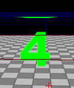

MaterialInstanceConstant (マテリアルインスタンス コンスタント) パラメータ継承
MaterialInstanceConstant (マテリアルインスタンス コンスタント) パラメータ継承
概要
MaterialInstanceConstant オブジェクトによって、ユーザーは、マテリアルに定義されたパラメータ セットをオーバーライドし、所定のマテリアルのカスタマイズされたインスタンスを作成することができます。
マテリアルにおいて特定の表現を利用することによって、インスタンス単位ベースで供給できるパラメータを提供できます。これらの表現には、次のものが含まれます。
| マテリアル表現 | 説明 |
|---|
| ScalarParameter | 単フロートのユーザー定義可能な値を提供します。アルファ値、乗数、などに役立ちます。 |
| VectorParameter | 4 フロートのユーザー定義可能な値です。UVOffset などの色および 2、3、または 4 コンポネントの演算に役立ちます。 |
| TextureSampleParameter2D | Texture2D ユーザー定義可能な値を提供します。インスタンス単位の異なるテクスチャとともに使用できるシングル マテリアルを作成するのに役立ちます。 |
| TextureSampleParameter3D | Texture3D ユーザー定義可能な値を提供します。 |
| TextureSampleParameterCube | TextureCube ユーザー定義可能な値を提供します。 |
各 MaterialInstanceConstant には、ペアレントへのポインタがあり、そこからオーバーライドしないパラメータを継承します。ペアレントは、マテリアル、または別の MaterialInstanceConstant です。このシステムによって、興味深い継承のチェーンをセットアップすることができ、利用できる効果を拡大します。
本書では、複数の継承のセットアップにおいて、パラメータの継承がどのように発生するかの例を提供します。特別なテクスチャを利用するマテリアルが作成され、継承されたインスタンスにより、システムの柔軟性が実証されます。
ソース テクスチャ
利用されるソース テクスチャ、ColorQuarters.tga は、数がアルファ チャンネルに組み込まれた単純な 4 色イメージです。以下に示される通りです。
 図 1. ColorQuarters.tga - RGB イメージ
図 1. ColorQuarters.tga - RGB イメージ
 図 2. ColorQuarters.tga - アルファ チャンネル
BlendMode を BLEND_Translucent または BLEND_Masked にセットし、マテリアルでオブジェクトに適用すると、イメージには、1-4 の数字が、それぞれ赤色、黄色、青色および緑色で表示されます。
図 2. ColorQuarters.tga - アルファ チャンネル
BlendMode を BLEND_Translucent または BLEND_Masked にセットし、マテリアルでオブジェクトに適用すると、イメージには、1-4 の数字が、それぞれ赤色、黄色、青色および緑色で表示されます。
マテリアル
マテリアル、ThreeParam_Mat が作成されます。このマテリアルは上記のテクスチャを利用して UV 座標をトリミングし、4 つの四分の一の一つのみが、所定の時間に示されるようにします。これは、入力テクスチャ座標を（0.5、0.5) だけスケーリングすることによって行います。このスケーリングの結果によって、結果として赤「1」の「イメージ」が提供されます (ブレンド モードが適切にセットされている場合)。
3 つのユーザー定義可能なパラメータが、マテリアルに挿入され、継承チェーンを実証します。
最初のパラメータ、UVOffset は、スケールされたテクスチャ座標に追加されるベクタパラメータです。このパラメータは、パラメータ名を 「UVOffset」にして、MaterialExpressionVectorParameter インスタンスによって提供されます。この表現からの値は、X および Y 値のみを通す ComponentMask によって実行されます。結果は、使用するテクスチャのサブイメージを「シフト」するために、スケールされた UV 値に追加したものになります。例えば、(0.5、0.0) が、UVOffset パラメータにセットされた場合、テクスチャは、右上の四分の一区分がサンプルされます。UVOffset のデフォルト値は、(0.0、0.0、0.0、0.0) にセットされており、テクスチャのオフセットはありません。
この最終計算されたテクスチャ座標は、TextureSample 表現に渡され、テクスチャはソース イメージにセットされます。
2 番目のパラメータ、TextureBright は、結果として生じるイメージを「明るくする」(または暗くする…) ためにテクスチャ サンプルの RGB 出力とともに乗算されるベクタ パラメータです。このパラメータは、パラメータ名を「TextureBright」にセットして、MaterialExpressionVectorParameter インスタンスによって提供されます。この表現の出力は、テクスチャの RGB 出力とともに Multiply(乗算) 表現に供給されます。Multiply (乗算) 結果は、マテリアルの最終の拡散値として使用されます。TextureBright のデフォルト値は、(1.0、1.0、1.0、1.0) にセットされ、テクスチャを明るくする効果はありません。
3 番目のパラメータ、AlphaScale は、イメージの最終の不透明度をスケールするためにテクスチャ サンプルのアルファ出力とともに掛ける スカラー パラメータです。このパラメータは、パラメータ名を「AlphaScale」にセットして、MaterialExpressionScalarParameter インスタンスによって提供されます。この表現の出力は、テクスチャのアルファ出力とともに Multiply 表現に供給されます。Multiply（掛けた）結果は、次に、マテリアルの最終の不透明度値として使用されます。AlphaScale のデフォルト値は、1.0 にセットされ、テクスチャのアルファには影響がありません。
完成したマテリアルが以下に示されています。
 図 3. マテリアル エディタでの ThreeParam_Mat
このマテリアルを「そのまま」 StaticMesh、この場合デフォルトのエディタ キューブに適用すると、結果は以下のようになります。
図 3. マテリアル エディタでの ThreeParam_Mat
このマテリアルを「そのまま」 StaticMesh、この場合デフォルトのエディタ キューブに適用すると、結果は以下のようになります。
 図 4. StaticMesh に適用された ThreeParam_Mat
ご覧のように、テクスチャのサブイメージが、イメージの左上隅あります。デフォルト値では、イメージを明るくすることもなく、オフセットもなく、スケーリングもない結果になります。
図 4. StaticMesh に適用された ThreeParam_Mat
ご覧のように、テクスチャのサブイメージが、イメージの左上隅あります。デフォルト値では、イメージを明るくすることもなく、オフセットもなく、スケーリングもない結果になります。
最初の MaterialInstanceConstant オブジェクト
MaterialInstanceConstant を作成し、First_MatInst としました。これには、ThreeParam_Mat にセットしたペアレントがあります。2 つのベクタ パラメータ値を同様に、ペアレント マテリアルのデフォルト パラメータをオーバーライドするためにセットします。
1 番目は、「TextureBright」と名付け、値を (5.0、5.0、5.0、1.0) にセットします。この値により、ペアレント マテリアルの (1.0、1.0、1.0、1.0) の設定がオーバーライドされ、5 のファクタだけ「明るくされている」テクスチャになります。
2 番目は、「UVOffset」と名付け、値を (0.5、0.5、0.0、0.0) にセットします。この値により、ペアレント マテリアルの (0.0、0.0、0.0、0.0) の設定がオーバーライドされ、イメージの右下にシフトされたテクスチャ サンプルになり、緑色の「4」が表示されます。
この MaterialInstanceConstant のプロパティは、以下のように表示されます。
 図 5. First_MatInst プロパティ
この MaterialInstanceConstant を StaticMesh に適用すると、結果は以下に示すようになります。
図 5. First_MatInst プロパティ
この MaterialInstanceConstant を StaticMesh に適用すると、結果は以下に示すようになります。

図 6. 静的メッシュに適用された First_MatInst
ご覧のように、テクスチャのサブイメージは、イメージの右下隅にあります。テクスチャは、図 4 で示されたキューブよりも「より明るく」なり、インスタンス コンスタントは正確に機能しています。
2 番目の MaterialInstanceConstant オブジェクト
2 番目の MaterialInstanceConstant を作成し Second_MatInst とします。そのペアレントを First_MatInst MaterialInstanceConstant にセットします。シングル ベクタ パラメータ値を同様に、ペアレントのパラメータをオーバーライドするためにセットします。
パラメータは「TextureBright」と名付け、値は、(5.0、5.0、5.0、1.0) にセットします。この値は、ペアレント マテリアルの (1.0, 1.0, 1.0, 1.0) の設定をオーバーライドし、5 のファクタだけ「明るくされる」テクスチャになります。
パラメータは「UVOffset」と名付け、値は、(0.5、0.0、0.0、0.0) にセットします。この値により、ペアレント マテリアルの (0.5、0.5、0.0、0.0) の設定はオーバーライドされ、イメージの右上にシフトされるテクスチャ サンプルの結果になり、黄色の「2」が表示されます。
この MaterialInstanceConstant のプロパティは、以下のように表示されます。
 図 7. Second_MatInst プロパティ
この MaterialInstanceConstant が、StaticMesh に適用されると、結果は、以下に示されるようになります。
図 7. Second_MatInst プロパティ
この MaterialInstanceConstant が、StaticMesh に適用されると、結果は、以下に示されるようになります。
 図 8. StaticMesh に適用される Second_MatInst
ご覧のように、テクスチャのサブイメージは、イメージの右上隅にあります。テクスチャは、図 4 に示されているキューブよりも「より明るく」なり、また、First_MatInst によって供給される値を使用しており、インスタンス コンスタントは正確に機能しています。
図 8. StaticMesh に適用される Second_MatInst
ご覧のように、テクスチャのサブイメージは、イメージの右上隅にあります。テクスチャは、図 4 に示されているキューブよりも「より明るく」なり、また、First_MatInst によって供給される値を使用しており、インスタンス コンスタントは正確に機能しています。
要約
表示される各キューブは、同じマテリアルを利用しますが、MaterialInstanceConstant の使用法のために異なる外観を呈することになります。チェーンで一緒にしたときは、同じベース マテリアルから、様々な効果を生じるためにキューブを使用することができます。
この例では、MaterialInstanceConstant の使用法によってオーバーライドのために利用できる 3 つのパラメータを含むマテリアルが作成されました。
継承セットアップのチェーンは次の通りです ('-->' によって‘parent of’が表されます):
ThreeParamMat --> First_MatInst --> Second_MatInst.
以下に、この説明で使用した 3 つのキューブすべてのスクリーンショットがあります。
 図 9. 3 つすべてのキューブ サンプル
以下の表に、各キューブがパラメータを得たソースが詳述されています。
図 9. 3 つすべてのキューブ サンプル
以下の表に、各キューブがパラメータを得たソースが詳述されています。
| キューブ | 適用されたマテリアル | TextureBright | UVOffset | AlphaScale |
|---|
| 一番左 | ThreeParam_Mat | ThreeParam_Mat | ThreeParam_Mat | ThreeParam_Mat |
| 中央 | First_MatInst | First_MatInst | First_MatInst | ThreeParam_Mat |
| 一番右 | Second_MatInst | First_MatInst | Second_MatInst | ThreeParam_Mat |